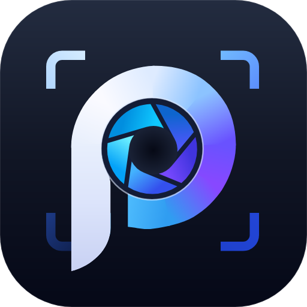

확대 및 전체 화면
화면 맞춤, 실제 크기, 확대·축소와 전체 화면 표시를 지원합니다.
사진을 돌아보고, 필요한 만큼 다듬으세요. 빠른 탐색부터 색 보정·영역 효과·AI 업스케일까지, 원본을 지키며 남길 순간에 집중합니다.
Windows x64 · v1.0.32026-10-26

실제 Windows 앱 화면입니다. 선택하면 캡처를 원래 크기로 확대합니다.
이미지 뷰어 · 편집기
다음 섹션PIC × 비움
사진을 뜻하는 PIC과 한국어의 비움에서 출발했습니다. 쌓인 사진을 돌아보고, 필요한 만큼 다듬으며 소중한 순간에 여백을 만드는 도구입니다.
덜어낼수록, 더 선명해지는 순간.
01 /이미지 보기
화면 맞춤과 1:1 표시, 확대·축소와 이동을 지원합니다. 이전·다음 이미지 탐색과 썸네일 스트립으로 파일을 선택할 수 있습니다.

화면 맞춤, 실제 크기, 확대·축소와 전체 화면 표시를 지원합니다.
폴더 내 이미지와 썸네일을 탐색하고, 지원하는 다중 페이지 파일과 애니메이션 이미지를 표시합니다.
하단 정보 막대에서 크기, 화소 수, 비트 깊이, 형식과 파일 위치를 확인합니다. EXIF 패널은 카메라와 촬영 정보를 표시합니다.
이미지 형식
JPEG · PNG · WebP · AVIF · GIF · TIFF
SVG · ICO · RAW / GPR / X3F · PSD
PDF · EPS · BMP
Windows x64에서 확인한 형식을 소개합니다. RAW는 검증된 21개 확장자와 X3F·GPR을 지원하며 카메라·변형에 따라 다를 수 있습니다. PDF는 정적 페이지, EPS는 내장 미리보기만 표시합니다. 벡터·레이어 파일의 보기가 동일 형식 편집·저장을 뜻하지 않으며 다른 OS 실행은 별도 검증 대상입니다.
02 /이미지 편집
편집 모드(Ctrl+E)에서 자르기·크기 변경·색 보정·모자이크·영역 흐리게를 사용합니다. 미리보기·원본 비교·실행 취소를 지원합니다.
1.0.3 · 2026-10-26: 영역 효과 강도 1~20·기본값 10, 실행 대기 개선, PDF 화면 맞춤과 삭제 안내 3초 자동 닫힘. 아래 화면은 1.0.2에서 촬영했습니다.


자르기 · 리사이즈(px/%) · 회전 · 뒤집기 · 수평 보정
노출 · 밝기 · 대비 · 감마 · 레벨/히스토그램 · 그림자/하이라이트
색조 · 채도 · 명도 · 화이트밸런스 · 비브런스 · RGB 마스터 커브
샤픈 · 가우시안 블러 · 노이즈 감소 · 클래리티
자동 보정 · 적목 보정 · 샘플/브러시 잡티 복구
흑백 · 비네트 · 필름그레인 · 모자이크 · 영역 흐리게
조절값을 미리 보고 적용한 뒤 실행 취소·다시 실행할 수 있습니다. 수정 전 버튼을 누르고 있는 동안 원본과 비교하며, 패널을 접어도 작업을 유지합니다.
선택한 형식으로 이미지를 인코딩해 저장합니다. JPEG·WebP·AVIF의 저장 품질은 환경설정에서 지정합니다.
사진·일러스트 모델, 2·4·8배 확대와 결과 비교를 제공하며 편집 창에서 다듬은 결과에 이어서 실행할 수도 있습니다. Windows x64와 Vulkan GPU가 필요하고 결과는 새 파일로 저장합니다.
여러 파일을 7개 형식으로 순차 변환합니다. 진행률·취소·파일별 결과를 확인합니다. 첫 이미지·페이지만 처리하며 메타데이터를 제거하고 기존 파일은 건너뜁니다.
히스토그램은 미리보기 기준입니다. 저장은 현재 이미지·페이지·프레임 한 장의 평면 이미지이며 레이어·벡터·애니메이션은 유지하지 않습니다.
03 /앱 스크린샷
폴더 탐색, 1:1 보기, 도구 모음, 환경설정, AI 업스케일과 일괄 변환을 서로 다른 예제 사진과 실제 앱 화면으로 소개합니다. 편집 창 화면은 위 편집 섹션에서 확인하세요.
마우스로 드래그하거나 터치로 옆으로 이동합니다. 좌우 버튼으로도 이동할 수 있습니다.
04 /언어 지원
한국어, 영어, 스페인어, 일본어, 중국어 간체·번체, 프랑스어, 이탈리아어, 러시아어를 지원합니다. 앱을 재시작하지 않고 언어를 변경할 수 있습니다.
언어를 선택하면 이 페이지가 바로 바뀝니다.
05 /개발 및 배포

PICVIUM 1.0.3 · 설치형 Setup과 포터블 ZIP을 제공합니다. .NET 런타임이 포함되어 별도 설치가 필요 없습니다.
개인·비상업용 무료 · 모든 이미지 처리는 내 PC에서
Windows 10 / 11 · 64비트
설치형·포터블은 %APPDATA%\PICVIUM\settings.ini를 공유하며 캐시·임시는 %LOCALAPPDATA%\PICVIUM에 저장합니다.
시작 시 새 버전을 확인하며 도움말 > 업데이트 확인으로 직접 조회할 수 있습니다. 다운로드한 파일의 SHA-256을 확인한 뒤 원할 때 재시작하여 적용합니다.
제거 시 설정은 기본 보존됩니다. 공용 설정 삭제를 선택하면 포터블 설정도 사라집니다.
AI 업스케일에는 Vulkan GPU가 필요합니다. macOS·Linux 버전은 준비 중입니다.
850C6A76F6F386FCB7B581E94B086DE28560EDF2A85F10A859967FC19B393C9C PICVIUM_v103_Setup.exe
32F6D79B9C2A2F31E89B39BD66522BE556F473CC23F0A8AA857C1A6AE04F1538 PICVIUM_v103_Portable.zip